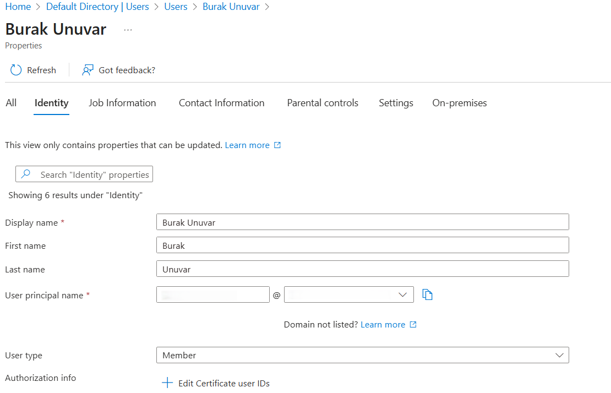
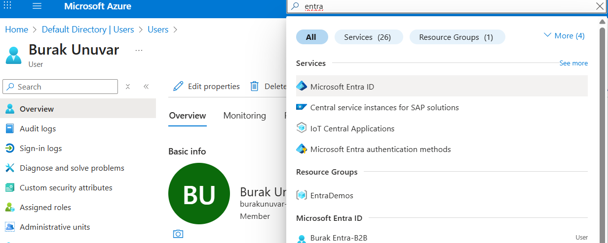

Introduction
When you sign up to Azure using a personal email (like @outlook.com, @gmail.com, @hotmail.com, etc.), it creates a personal (Microsoft Account) — not a business (work or school) account.
This is perfectly fine for learning, experimenting, and even small projects. However, certain enterprise features and services in Azure and Microsoft 365 require a business account. This guide will show you:
- How to convert your personal account to a business account
- Key differences between personal and business accounts
Steps to Convert a personal to a Business Account
- Go to https://portal.azure.com and sign in with your personal email
- Go to Entra → Manage → Users → select your username
- Update the default principal name (it will be similar to yourname-azure@*****.onmicrosoft.com) and note it down. This will become your new business account email.

- Sign out and close your browser. Sign back in with your new business account email. If the password is not accepted, you may need to reset it using the email address you used to sign up for Azure
- Go to https://myaccount.microsoft.com — If you see Organization info, Devices, Entra ID, etc. → it's a Work/School Account.

Differences Between Personal and Business Account
| Aspect | Personal Account (Microsoft Account) | Business/Work Account (Entra ID / Azure AD) |
|---|---|---|
| Example Email | you@outlook.com, you@gmail.com | you@company.com (managed by your org's Entra ID) |
| Identity System | Managed by Microsoft Account (MSA) service | Managed by Microsoft Entra ID (Azure AD) |
| Azure Portal Access | Yes, but only as an individual under a Pay-As-You-Go or free subscription | Yes, within an organization tenant |
| Environments (Power Platform, MCS, etc.) | Limited or none — because they require an Entra ID tenant | Fully supported |
| Tenant Creation | No tenant (just a personal identity) | Creates/uses a full Entra tenant |
| Copilot Studio, Fabric, M365 integrations | ❌ Not supported | ✅ Supported |